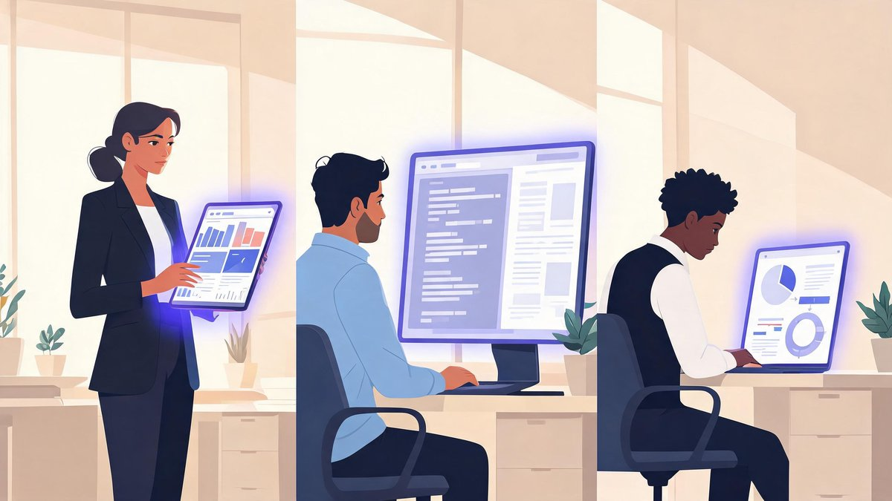

AI does not wait for your Monday meeting. Model launches, funding rounds, policy fights, and capability jumps now land at all hours — and the executives who track them well all rely on the same quiet advantage: a disciplined newsletter stack. The problem for tech and business leaders in 2026 is not finding AI news; it is surviving the volume without losing the signal. We ranked the six best AI newsletters for exactly that job — verified cadence and pricing as of September 2026, and organized by role so you can pick in minutes, not weekends.
🔑 Key Takeaways
- The six standouts for leaders: The Rundown AI, Exponential View, Import AI, Stratechery, Benedict Evans — plus 1440 as a neutral general-news base
- All six are free to start; most core briefs are fully free, with paid tiers adding courses, premium analysis, or early access — not gatekeeping the news
- Pick by role: executives → Rundown AI + Exponential View; product/engineering → Import AI; investors → Stratechery
- The sustainable stack is one daily brief plus one weekly deep dive — about ten minutes a day
- Every cadence and price here was verified in September 2026; many older comparison posts carry outdated claims
What Makes a Great AI Newsletter in 2026?
Anyone can forward links. The newsletters worth a leader's time do three harder things: they filter (twenty stories that matter out of two hundred that don't), they contextualize (why it matters for markets, products, or policy), and they respect your clock (a five-minute read that actually takes five minutes). Price and production polish matter less than editorial discipline — which is why several free letters on this list beat paid media on signal quality.
The 6 Best AI Newsletters at a Glance
| Newsletter | Run by | Cadence | Price | Best for |
|---|---|---|---|---|
| The Rundown AI | Rowan Cheung | Daily | Free (ad-supported) | Daily AI signal for professionals |
| Exponential View | Azeem Azhar | Weekly | Free + paid Premium tier | Strategic, big-picture analysis |
| Import AI | Jack Clark (Anthropic) | Weekly | Free, +$100/yr early access | Research and policy depth |
| Stratechery | Ben Thompson | 3 paid/wk + free Friday | Subscription | Business-model strategy |
| Benedict Evans | Benedict Evans | Weekly | Free | Tech trends in clean context |
| 1440 | Tim Huelskamp's team | Daily (weekday) | Free | Neutral general-news base |
The Six, Profiled
1. The Rundown AI — the daily signal
Rowan Cheung · Daily · Free (ad-supported) · 2M+ subscribers
Founded by Rowan Cheung in 2022, The Rundown AI grew from social-media AI threads into one of the world's largest AI newsletters, passing 2 million subscribers. Each morning it distills the day's model launches, tools, funding, and policy into roughly a five-minute read with links to original reporting. The core brief is free and ad-funded; the paid product, The Rundown University, sells AI courses — not the newsletter itself. For professionals who need AI awareness daily, it is the default first subscription.
2. Exponential View — the strategist's weekly
Azeem Azhar · Weekly · Free + paid Premium tier
Azeem Azhar's Exponential View sits above the daily churn and asks what exponential technology change means for economies, companies, and policy. The weekly edition is free; a Premium tier adds deeper analysis and briefings. Where Rundown tells you what shipped this week, Exponential View tells you what it means over the next five years — the ideal complement for leadership teams thinking about positioning, not just products.
3. Import AI — research and policy, from inside a frontier lab
Jack Clark · Weekly · Free, optional $100/yr early access
Import AI is written by Jack Clark — co-founder and Head of Policy at Anthropic — which makes it the rare newsletter offering a window into how frontier-lab insiders actually think. Each week covers notable research papers, capability progress, and policy debates with more technical depth than any mainstream brief. It is free, with an optional $100/year tier that buys early access to some essays. For product and engineering leaders, it is the deepest free AI education available.
4. Stratechery — the business-model lens
Ben Thompson · 3 paid articles/week + free Friday bundle · Subscription
Ben Thompson's Stratechery pioneered the subscription-newsletter model, and it remains the sharpest place to understand tech strategy and business models — including the economics now driving the AI land-grab. Most daily analysis sits behind the subscription; the free Friday email (Stratechery Weekly) bundles the week with highlighted links open to everyone. Investors and strategy leads get the most value from a full subscription.
5. Benedict Evans — the trend context
Benedict Evans · Weekly · Free · 150,000+ readers
Former a16z analyst Benedict Evans writes a free weekly newsletter — read by well over 150,000 people — that places tech and AI moves in macro context: adoption curves, platform economics, and the questions nobody is asking yet. His essays are short, dense, and refreshingly free of hype. If Exponential View is the strategist's map, Evans is the cartographer checking the map for errors.
6. 1440 — the neutral base layer
Tim Huelskamp's team · Daily (weekday) · Free · 4M+ subscribers
1440 is not an AI newsletter — that is precisely why it earns a slot. The free weekday digest covers politics, world news, business, science, and culture in a strictly neutral five-minute read, giving the AI stories on this list their real-world context. It passed 4 million subscribers in October 2024. AI never happens in a vacuum; this is the vacuum-sealer. (We compared it in depth against The Rundown AI in our Rundown AI vs 1440 breakdown.)
AdSense In-content Ad
Which Newsletter Fits Your Role?

CEOs and executives: pair The Rundown AI (daily awareness) with Exponential View (weekly strategy). Together they cover what shipped and what it means.
Product and engineering leads: Import AI is your home base — research depth, capability trends, and policy from a frontier-lab co-founder. Add Rundown AI for launch-level news.
Investors and market watchers: Stratechery for the business-model logic behind the spending, plus Rundown AI to track the moves as they land.
Policy and ethics roles: start with Import AI; its author runs policy at a frontier lab, and the newsletter treats regulation as a first-class topic rather than an afterthought.
Everyone: keep 1440 underneath it all as the neutral, non-AI base so your context never narrows to one industry.
Free vs Paid: What Leaders Actually Need
Here is the part most 2026 comparison posts get wrong. Every newsletter on this list has a genuinely useful free tier — and for most leaders, free is enough:
- The Rundown AI: the daily brief is fully free and ad-supported; Rundown University sells courses, not news access
- Import AI: free; the optional $100/year only buys early access to some essays
- Exponential View: free weekly edition; Premium adds deeper analysis for teams that want it
- Stratechery: the only one where the core product is paid — the free Friday bundle is the test-drive
- Benedict Evans and 1440: entirely free
How to Build Your Stack
The pattern that survives busy quarters is 1 + 1 + 1: one neutral base (1440), one daily AI brief (The Rundown AI), and one weekly deep dive matched to your role (Exponential View for strategy, Import AI for research depth, Stratechery for business models). That is roughly ten minutes a day, every claim traceable to original reporting, and zero dollars unless you choose a premium tier. Start free, give each letter two weeks, and cut whichever one you keep skimming past — the stack should earn its inbox slot daily.
Research-Driven Picks: TLDR AI, The Batch, and AI Snake Oil
Leaders whose job is tracking the research itself have three specialist additions worth knowing. TLDR AI is a free daily newsletter that compresses new model releases, papers, and funding news into a dense technical scan — the fastest way to see what shipped today. The Batch, from DeepLearning.AI, takes a weekly educator's lens, translating significant research into accessible explanations for practitioners. And AI Snake Oil offers the skeptic's counterweight: academic researchers stress-testing AI claims and separating demonstrated capability from marketing. Layer any of these on top of the six above when research depth — not market moves — is the deliverable.
Frequently Asked Questions
What is the best AI newsletter for business leaders in 2026?
The Rundown AI is the strongest daily choice — a free, ad-supported brief with 2M+ subscribers covering model launches, tools, and industry moves in about five minutes. Pair it with Exponential View, a free weekly that adds strategic analysis of where exponential technology is heading, and you cover both the daily signal and the long-term picture.
Are AI newsletters free?
Most core AI newsletters are free. The Rundown AI's daily brief is free and ad-supported, Import AI is free with an optional $100/year early-access tier, Benedict Evans and Exponential View's weekly edition are free, and 1440 is entirely free. Stratechery is the main exception — most of its daily analysis requires a subscription, with a free Friday bundle as the test-drive.
Which AI newsletter is best for investors?
Stratechery by Ben Thompson, combined with The Rundown AI. Stratechery explains the business models and strategy behind tech's biggest shifts — including AI spending economics — while Rundown AI tracks the daily launches, funding rounds, and policy moves as they happen.
Which newsletter covers AI research most deeply?
Import AI, written weekly by Jack Clark, co-founder and Head of Policy at Anthropic. It goes deeper on research papers, capability progress, and policy debates than any mainstream brief, and it is free — the optional $100/year tier only adds early access to some essays.
Is The Rundown AI or 1440 better for AI news?
The Rundown AI — it is a dedicated AI brief, while 1440 is a general-interest digest that covers AI only when it crosses into mainstream news. The two work best together: 1440 as the neutral base for everything else, Rundown AI for AI-specific depth. Both are free; our Rundown AI vs 1440 comparison covers the differences in detail.
Final Verdict
There is no single "best" AI newsletter — there is the best stack, and for 2026 it costs almost nothing. The Rundown AI is the daily default; Exponential View or Import AI is the weekly brain; Stratechery earns its subscription for strategy-heavy roles; 1440 keeps the whole world in view. Subscribe to two or three today, read them for two weeks, and keep only the ones that make you visibly smarter in meetings. For more on the AI race itself, see our ChatGPT vs Claude comparison, our coverage of OpenAI's Astra for Law push into legal work, and the GPT-5 launch analysis.
Sources: The Rundown AI (official site), 1440 (official site and press releases), PR Newswire (1440 at 4M subscribers, Oct 2024), Exponential View (official site), Stratechery (official site), Benedict Evans (official site), ReadLess (newsletter reviews, 2026).